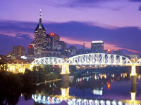
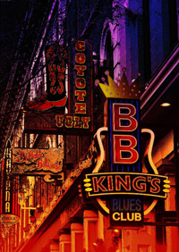

 By 1860, when the first rumblings of secession began to be heard across the South, antebellum Nashville was a very prosperous city. The city’s significance as a shipping port made it a desirable prize as a means of controlling important river and railroad transportation routes. In February 1862, Nashville became the first state capital to fall to Union troops. The Battle of Nashville (December 15–16, 1864) was a significant Union victory and perhaps the most decisive tactical victory gained by either side in the war.
Within a few years after the Civil War the city had reclaimed its important shipping and trading position and also developed a solid manufacturing base. The post-Civil War years of the late 19th century brought a newfound prosperity to Nashville. These healthy economic times left the city with a legacy of grand classical-style buildings, which can still be seen around the downtown area.
Since the 1970s, the city has experienced tremendous growth, particularly during the economic boom of the 1990s under the leadership of then-Mayor and later-Tennessee Governor, Phil Bredesen, who made urban renewal a priority, and fostered the construction or renovation of several city landmarks, including the Country Music Hall of Fame and Museum, the downtown Nashville Public Library, the Bridgestone Arena, and LP Field.
In 1997 Nashville was awarded an NHL expansion team which was subsequently named the Nashville Predators. LP Field (formerly Adelphia Coliseum) was built after the National Football League’s (NFL) Houston Oilers agreed to move to the city in 1995. The NFL team debuted in Nashville in 1998 at Vanderbilt Stadium, and LP Field opened in the summer of 1999. The Oilers changed their name to the Tennessee Titans and saw a season culminate in the Music City Miracle and a close Super Bowl game that came down to the last play.
Today, the city along the Cumberland River is a crossroads of American culture, and one of the fastest-growing areas of the Upland South.